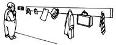
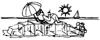
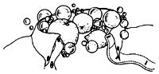
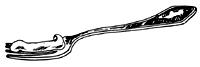
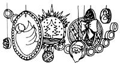

Through the years we've all discovered a few practical, time-tested solutions to the frustrating little problems of everyday life. Why not share your best ideas with the rest of MOTHER's readers? Send your suggestions to Country Lore, Mother Earth News, P.O. Box 70, Hendersonville, NC 28793. A one year subscription-or a one-year extension of an existing subscription-will be sent to each contributor whose tip is printed in this column.-MOTHER
Here's one for the forgetful people who, like my wife and me, can't remember to lower the thermostat when they leave the house for work. I made a key holder out of scrap wood and some hooks (you could buy one, of course) and hung it right next to the thermostat. Now the last one out grabs the car keys and turns down the heat. We save on fuel bills and misplace the keys less often, too.- Thomas J. Boucher, Troy, New York
My husband discovered a no-cost way to stop winter drafts from entering the house through wall outlets. Using the wall plates as templates, he cuts rectangles out of plastic-foam egg carton tops, trimming each piece 1/8" smaller on all sides than the plate. These insulators fit snugly over the exposed receptacles. The plates are screwed back on, and when a plug is needed, the prongs easily pierce the foam.- Lyrea Hughes, Pipe Creek, Texas
I keep four four-foot-long roofing shingles in my car all year round, just so I'll never be caught in a snowdrift or an icy spot without any means of traction. It's easy to slide two tire-width-wide shingles-abrasive side up-under each of the drive wheels for eight feet of no-skid pull. The shingles can be stored in a small space and are light enough for anyone to use . . . and no instructions are needed.- Donald T. Bailey, Los Lunas, New Mexico
Through the winter, I set waxed milk cartons full of water outside to freeze. As freezer-stored food is used up, I fill the empty spaces with my "free" ice, thus helping my appliance run more economically. In the summer, as we again stock the freezer with garden produce, the ice is brought out for making hand-cranked ice cream, for keeping coolers cool, and for icing beverages.- Ruth F. Jacobs, Hilliard, Ohio
My husband and I often forget to wear gloves when we cut and carry wood for our stove, so we get a lot of splinters. He taught me to put tincture of iodine on the general area of the splinter; the antiseptic stains the sliver, making it easier to see and remove.- Mrs. Gordon Grant Jr., Kintnersville, Pennsylvania
After an inch or two of "dry" snow has fallen, we take our small rugs outside and throw them face down in a drift. It's amazing how much dirt and grime this removes, and beating the rugs with a broom dislodges even more. The snow seems to brighten the colors, and the rugs absorb very little moisture. My mother even uses this method on her Oriental carpets.- Peter Henricks, Englishtown, New Jersey
To soothe an itching, ticklish throat, try my homemade cough syrup. Mix together two tablespoons of honey and one teaspoon of baking soda. It tastes good, it won't spill out of a spoon, and it works!- Evelyn Love, Harper, Texas
After burning my hands almost every time I tried to reposition logs in my woodstove, I went in search of welders' gloves. But the price was so high I decided I'd be forced to continue collecting blisters. A hardware salesman, though, suggested buying the less-costly mitts worn by mink ranchers. They are not fireproof, but they do have a fire-resistant lining and are ideal for my purpose.- Judy Hitchens, Barrington Passage, Nova Scotia
I buy processed "firelogs" on sale (usually half price) at the end of the heating season. I cut each log into inch-thick rounds, place each chunk in a small paper bag that I twist shut, and store the bags in an old steel chest. Just one of these will start a fire easily. When the bag is set on fire, the chunk of firelog soon starts to burn. I add kindling and have a hot fire in short order, even with wet wood.- R. V. MacGillivray, Williamsburg, Virginia
I was always disturbed, when my children came in after playing in the snow, to see their little wrists all red and chapped, and snow frozen to their mitten culls. With this in mind, I began to save old tube socks that were threadbare in the foot. I cut the entire top off each one and cut a thumb hole near the bottom edge of the tube. Now before the children go out in the cold, they slip a wrist warmer over each hand, put on their coats and mittens, and play in comfort for a long time.- Sharon Metz, Walbridge, Ohio
I'm a single man who does his own laundry, and I used to have a hard time getting my collars clean, especially on fabrics I didn't want to bleach. I've found citrus oil is the secret. I just grind up orange, lemon, and grapefruit rinds and rub the resulting pulp on my rings around the collar. It saves me money and gets the stains out.- Shirley Donner, Everett, Washington
My young son, who sometimes seems to have every toy ever invented, decided to pull out the stopper from our bathroom sink to use as a spaceship. It just disappeared . . . probably forever. To save my wife's sanity, I found a one-inch-diameter pill bottle that fit the drain exactly. I painted the top silver and cut two half-inch-wide slots in either side. I hooked the sink plug's pulldown arm through the slots, and the surrogate stopper worked just like the original. And it's still working . . . 10 months later. -George Hughes Sr., Butner, North Carolina
I have a long car and a short garage; my vehicle fits, but with just inches to spare. I was always either hitting the bumper on the wall in front (not too good for the wall!) or letting the rear hang out so I couldn't shut the garage door. Solution? I hung a small rubber ball on a cord from the ceiling so the ball just grazes the front end of the car when it's parked perfectly.- Alice Carwile, Leitchfield, Kentucky
Do your readers know that toothpaste removes tarnish? My mother uses it on all her silver jewelry.- Mike Bebb, Factoryville, Pennsylvania
Press a dab of white toothpaste into nail and tack holes left when you take down pictures and posters. Let the paste dry, paint over it, and presto! The ugly holes are gone. - Jeremy Loveall, Corpus Christi, Texas
Beside our freezer I've hung a piece of white laminated plastic (the kind used for countertops) and an erasable felt-tipped marker. On it we keep an inventory of our freezer's contents with the date each item was processed. We've also thought of using a board (framed, perhaps) for various other purposes-children's assignments, home projects, or even the family budget. -Michael L. Wetzel, Negaunee, Michigan
All year long I save the small plastic lids from milk and juice bottles and the larger ones from shortening, nut, and coffee cans. Then, in the hectic days before Christmas, the children turn the lids into ornaments for the tree. They paint them, glue cutouts on them, and decorate them with bits of colorful trim. They punch a hole in each lid and hang it on the tree with string or a hook. A large number of the small lids strung together make a pretty garland. The ornaments are safe for small hands, and these same hands are kept busy, too, during this exciting season.- Nina L. C. Rynear, Reno, Nevada
We make our own inexpensive, nitrogen-rich plant food for houseplants. We dissolve an envelope of unflavored gelatin in a cup of hot tap water, then add three cups of cold water. Fed this solution once a month, our plants are kept green and healthy . . . and with the money we save, we buy extra houseplants!- William Fiedler, Marshville, North Carolina
As a mother of four, I've found that toddlers would just as soon use their crayons on painted and paneled walls as on paper and coloring books. A light rubbing with a dry steel-wool cleansing pad will remove any unwanted artwork.- Linda House, Jacksboro, Texas
Removing a broken windowpane from its frame can be hazardous, but I discovered a way to make this a safe and easy task. Just apply spray adhesive to both sides of the glass and then press newspaper over the sticky surfaces. When the putty is removed, the shards of glass all adhere to the paper.- Larry Horn, Bridgton, Maine
|
 |
 |
 |
|
 |
 |
|